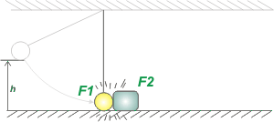

NO ME SALEN
PROBLEMAS RESUELTOS DE FÍSICA DEL CBC
(Leyes de conservación, choque elástico, energía mecánica)
|
|

|
Adicional No me salen E7 - La masa 1 de 4 kg, sujeta a una cuerda, de masa despreciable, que le permite oscilar como un péndulo, se suelta de una altura de 1,25 metros. Al pasar por la vertical, choca con una masa 2 de 16 kg, que se halla detenida. Durante el choque se pierde la mitad de la energía. Calcular la distancia d que recorrerá la masa 2 después de chocar, hasta detenerse, si el coeficiente de roce con el piso vale 0,2.
|
| El esquemita te muestra la primera parte del relato del enunciado. El cuerpo 1 se halla a 1,25 metros de altura. En el instante que llamé 001 se suelta, y llega abajo justo antes de chocar, instante 01, con cierta velocidad, que llamaré vO1. Esa velocidad es la que nos interesa, porque con ella, después, plantearemos el choque. |
|
|
 |
EM001 = EM01
m1 g h = ½ m1 v01²
v01² = 2gh
v01 = (2gh)½ |
|
|
|
Esa velocidad y su cuadrado se pueden calcular numéricamente:
v01² = 2 . 10 m/s² . 1,25 m = 25 m²/s²
v01 = 5 m/s
Por lo tanto, la energía de la que disponemos para el choque vale:
E0 = ½ m1 vO1² = ½ 4 kg 25 m²/s² = 50 J
|
|
|
|  |
La energía cinética después del choque vale:
EF = 0,5 E0
por lo tanto...
EF = 25 J |
|
|
|
En la discusión final te hago un comentario sobre el porcentaje de energía extraviado y una magnitud asociada: el coeficiente de restitución.
0,5 (½ m1 vO1² + ½ m2 vO2²) = ½ m1 vF1² + ½ m2 vF2²
Antes del choque el cuerpo 2 está detenido, de modo que nos queda:
0,5 m1 vO1² = m1 vF1² + m2 vF2² [1]
pero además, en este choque, sea del tipo que sea, tenemos...
m1 vO1 = m1 vF1 + m2 vF2 [2]
Si te fijás, entre las ecuaciones [1] y [2] se forma un sistema en el que hay 2 incógnitas solas y, por lo tanto, pueden encontrarse. Si querés, podés verlas así:
12,5 m²/s² = vF1² + 4 vF2² [1]
5 m/s = vF1 + 4 vF2 [2]
Sólo las reordené y prolijé un poco. A partir de acá tenés 500 caminos algebraicos diferentes para llegar al resultado. Yo voy a recorrer uno. De la [2] despejo vF1, y lo que me da, lo meto en la [1].
vF1 = 5 m/s — 4 vF2
12,5 m²/s² = (5 m/s — 4 vF2)² + 4 vF2²
12,5 m²/s² = 25 m²/s² + 16 vF2² — 40 m/s vF2 + 4 vF2²
0 = 12,5 m²/s² — 40 m/s vF2 + 20 vF2²
Acá tenemos una cuadrática, en la que la variable vF2 puede obtener dos valores. El que buscamos nosotros es éste:
vF2 = 1,612 m/s
Con lo cual la velocidad de la masa 1 después del choque vale:
vF1 = — 1,45 m/s
Que sólo nos interesa para verificar que la energía es la correcta. Vamos a la última parte del ejercicio. |
|
|
 |
El trabajo del rozamiento es igual a la variación de energía del cuerpo 2.
WFnc = ΔEF,FF
Recordando que en un recorrido d, el cuerpo se detiene... |
|
|
|
— m2 g μd d = — ½ m2 vF2²
d = vF2² / g μd = (1,612 m/s) ² / 2 . 10 m/s² . 0,2
|
|
|
|
|
|
DISCUSION: En general, para cualquier choque, se define el coeficiente de restitución e, como el cociente entre la rapidez de alejamiento (después del choque), dividida la rapidez de encuentro (antes del choque):
e = |vF2 — vF1| / |vO2 — vO1|
que en nuestro caso vale:
e = |1,612 m/s — (— 1,45 m/s )| / |5 m/s| = 0,61
Que es más práctico que el porcentaje de pérdida de energía ya que el coeficiente de restitución es una constante que no depende del par de cuerpos que están chocando.
Otra cuestión interesante para destacar en este ejercicio es que a priori no era inmediato saber si el cuerpo 1 rebotaba, o sea: tenía después del choque una velocidad de retroceso... o si, por el contrario, su velocidad después del choque continuaba con el mismo sentido con la que llegaba a chocar. Tampoco era difícil predecirlo, ya que depende de la relación entre las masas... ¿Te animás a deducirla? |
|
 |
| DESAFIO: Resolver el mismo ejercicio, pero teniendo como dato no la pérdida de energía durante el choque sino el coeficiente de restitución. (Lógicamente, tenés que arribar al mismo resultado). |
|
| |
|
| Algunos derechos reservados.
Se permite su reproducción citando la fuente. Está totalmente prohibido ingresar con el torso desnudo. Última actualización nov-08. Buenos Aires, Argentina. |
|
|
|